-
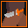
Sidearm
Resolve Warrior Combat Skill
Attack immediately with a sidearm that deals 3..33..40-5..55..68 damage
-
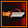
Desperation
Class Core Warrior Skill
For 10 seconds you cautiously go on the defensive, causing your attacks to deal half of the damage they normally would, but heal you for 75..450..544% of the damage that would be dealt.
-
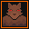
Intimidation
No Stat Warrior Stance
Make yourself look as intimidating as possible for 30 seconds. Enemies are more likely to see you as a threat during this time, but holding the pose reduces your damage from attacks by 10%.
-
Pressure
Class Core Warrior Combat Skill
Attack Immediately. if your target is using a skill that skill is interrupted and you are healed for 3..40..49-5..65..80.
-
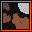
Fierce Roar
Might Warrior Skill
Unleash a fierce roar that deals 1..45..56-3..60..74 damage to enemies within melee range and slows casting time for spells they cast by 50% for 10..60..72 seconds.
-
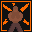
Powerful Stance
Might Warrior Stance
You put as much power into every attack as you can for the next 30 seconds. Your attacks during that time deal +2..15..18 damage, but cost you 2 energy.
-
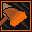
Mighty Blows
No Stat Warrior Stance
For 30 seconds you attack 50% slower but deal 50% more damage with attacks.
-
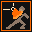
Guarded Stance
Resolve Warrior Stance
You take a sturdy stance for 5..45..55 seconds, during which you can't be interrupted.
-
Wild Strike
Protection Warrior Combat Skill
Attack immediately. If your target is targeting someone other than you then your attack speed is increased by 20% for 5..20..24 seconds.
-
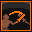
Riposte
Protection Warrior Stance
Block the next attack you would be hit by within 3 seconds, if that attack used an attack skill and the attacker is in range, immediately counter-attack for +3..30..37 damage.
-
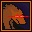
Focused Anger
Focus Warrior Stance
For the next 3 seconds you recklessly take 10% more damage, but deal +2..20..24 damage with attacks. The duration of this stance is refreshed every time you take damage.
-
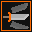
Versatile Attack
Focus Warrior Combo Combat Skill
Combo Attack Skill. Attack for +1..12..15-2..24..30 damage if you are in a stance. If you are not in a stance this attack is unblockable.
-
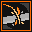
Blade Breaker
Might Warrior Combat Skill
A debilitating strike that reduces target enemy's Attack stat by 1..35..44 for 10..30..35 seconds if it hits.
-
Target Guard
Protection Warrior Stance
For 30 seconds you adopt a defensive stance that gives you 2..45..56 extra armor for every enemy targeting you.
-
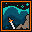
Soldiers Respite
Class Core Warrior Skill
You find a second wind to help you stay in the fight. If you are currently in a stance you heal for 2..55..68-4..65..80, or half that if you aren't in a stance.
-
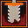
Vicious Strike
Might Warrior Combat Skill
A twisting, cruel strike that deals 1..9..11 extra damage and causes target enemy to bleed, dealing 10..66..80 more damage over 10 seconds.
-
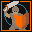
Counter
Resolve Warrior Stance
You are on guard for the next 3 seconds, the next physical attack you would be hit by in that time is blocked. If you block an attack, you gain 5..15..18 energy.
-
Inner Fire
Might Warrior Stance
Your blood burns with an intense vigor for 30 seconds that causes you to attack 15..50..59% faster, and deal 25..100..119% more damage with critical strikes. You also take 2..8..10 fire damage every two seconds.
-
Power Attack
No Stat Warrior Combat Skill
A mighty blow that deals an additional 25% of your weapon's damage.
-
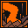
Earthquake
Might Warrior Skill
Stomp the ground, interrupting and dealing 2..34..42-6..50..61 physical damage to enemies within melee range.
-
Slam
Protection Warrior Skill
A massive strike that, if it hits, lowers your target's defenses for 15 seconds. During this time they take +1..15..18 damage from spells.
-
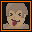
Taunt
Protection Warrior Skill
A particularly nasty insult causes target enemy to be more likely to attack you. The higher your Endurance stat, the more effective it is.
-
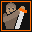
Opportunistic Stance
Focus Warrior Stance
For 30 seconds you adopt a watchful stance. While in this stance you have a 5..50..61% greater chance to score a critical hit on enemies suffering a condition.
-
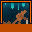
Last Man Standing
Resolve Warrior Skill
You get a second wind which heals your for 5..65..80-8..82..100. If either you are your target or are above half health you are only healed for 20% as much.
-
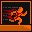
Ignore Pain
Resolve Warrior Skill
For 30 seconds you have +10..75..91 maximum health. If you have less than 25% health remaining you are healed for 15..40..46-20..64..75
-
Brave Stance
Class Core Warrior Stance
Strike a brave stance for 30 seconds that causes your critical hits with attacks deal +15..65..78% damage. While in this stance you take 15..65..78% extra damage when critically hit.
-
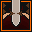
Exploit Weakness
Focus Warrior Combat Skill
Instantly launch an opportunistic strike that deals 1..20..25 extra damage for each condition target enemy is suffering from.
-
Refresh
No Stat Warrior Skill
Regain 15 energy, if you're not in combat regain all of your energy instead. This skill is easily interrupted.
-
Round Slash
Focus Warrior Combat Skill
Swing in a wide arc, attacking up to three enemies within attack range for +1..10..12 damage.
-
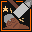
Stunning Strike
Protection Warrior Combat Skill
Smack target enemy right on the noggin, stunning them for 1..5..6 seconds if the attack hits. When they come to their senses they'll reasses who to target first.
-
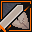
Rending Strike
Might Warrior Combat Skill
Strike with a heavy blow which deals 1..10..12 extra damage and reduces your target's armor by 1..100..125 for 30 seconds.
-
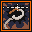
Apprehend
No Stat Warrior Skill
Yer goin' tae jail!
-
Savage Bash
Focus Warrior Skill
Crash into target enemy at high velocity, staggering them and lowering their maximum energy by 5..10..11 for 30 seconds
-
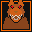
Chomp
Focus Warrior Skill
Chow down on your unfortunate target, seriously injuring them. While injured their maximum health is reduced by #2% for 5 minutes